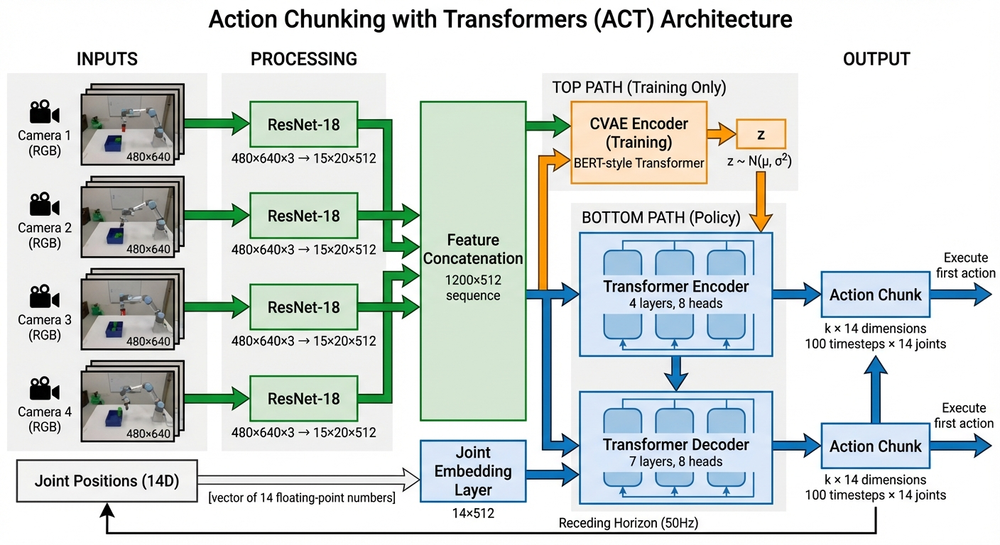
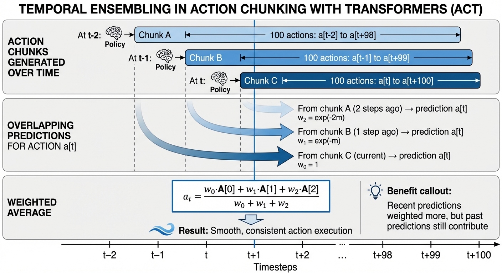

Robot Learning Part 1.5: Action Chunking with Transformers (ACT)
- Action chunking predicts sequences of actions instead of single actions, dramatically reducing compounding errors
- ACT combines CVAE + Transformers to achieve 80-90% success with just 50 demonstrations (10 minutes of data)
- Key innovation: Temporal ensembling with receding horizon control enables smooth, precise manipulation
- Performance: Chunk size k=100 improves success from 1% to 44% — action chunking is transformative
- Trade-off: ACT is faster and more data-efficient than Diffusion Policy, but less flexible for highly multimodal behaviors
Why Action Chunking Matters
Imagine teaching a robot to pick up a mug. In traditional behavioral cloning (recall from Part 1), the robot predicts one tiny action at a time — 50 micro-adjustments per second. Each prediction is an opportunity for error. Over a 10-second task, that’s 500 chances to drift off course. Errors compound exponentially, and the robot quickly enters states it never saw during training.
Action chunking solves this elegantly: instead of predicting the next 0.02 seconds of motion, predict the next 2 seconds all at once. The effective decision-making horizon drops from 500 steps to just 5. Compounding errors are reduced by a factor of 100.
This mirrors how humans naturally organize information. We don’t memorize phone numbers as 10 individual digits — we chunk them into groups (e.g., area code + prefix + line). Similarly, skilled pianists don’t think about individual finger movements; they execute entire musical phrases as cohesive units. Action chunking brings this same principle to robot learning.\(^{[3]}\)
This single idea — predicting action sequences instead of single actions — is the foundation of Action Chunking with Transformers (ACT), one of the most influential recent breakthroughs in robot imitation learning.
The Problem with Single-Step Prediction
Compounding Errors in Behavioral Cloning
Standard behavioral cloning treats robot learning as supervised learning: given observation \(o_t\), predict action \(a_t\). Simple, right?
The problem: errors compound over time. Here’s why:
- Distribution shift: Even a tiny prediction error moves the robot slightly off the demonstrated trajectory
- Novel states: The robot enters states not present in the training data
- More errors: Predictions from these novel states are even less accurate
- Exponential divergence: In continuous control, errors grow exponentially with task horizon
For a 10-second task at 50Hz (500 timesteps), this compounds into catastrophic failure.
Think of driving a car. If your steering is off by 1 degree, you barely notice after 10 feet. But after a mile, you’ve drifted into another lane entirely. In robot learning, each prediction is like a tiny steering adjustment. Small errors accumulate until the robot is completely off track — trying to grasp objects that aren’t there or colliding with obstacles.
The Non-Markovian Problem
There’s a deeper issue: human demonstrations aren’t perfectly Markovian. Consider a human pausing mid-motion before continuing. The observation is identical during the pause and when movement resumes, yet the action should be different.
Single-step prediction cannot solve this — it’s theoretically impossible to map identical observations to different actions. The policy needs temporal context: “I’ve been stationary for 1 second, time to move” versus “I just started the pause.”
Temporal Dependencies Matter
Robot manipulation is inherently sequential:
- Reaching: Smooth acceleration and deceleration phases
- Grasping: Coordinated finger closure over time
- Placement: Gradual force application to avoid dropping objects
Single-step policies must learn these temporal patterns implicitly through recurrent architectures or history stacking. Action chunking makes temporal structure explicit by predicting entire motion sequences.
Action Chunking: The Core Idea
From Points to Trajectories
Action chunking changes the learning objective from predicting individual actions to predicting sequences:
\[ \begin{aligned} \text{Standard BC:} \quad & \pi(a_t | o_t) && \text{(predict single action)} \\ \text{Action Chunking:} \quad & \pi(a_{t:t+k} | o_t) && \text{(predict k-step sequence)} \end{aligned} \tag{1}\]
At timestep \(t\), the policy outputs \(k\) future actions: \([a_t, a_{t+1}, ..., a_{t+k-1}]\).
How Horizon Reduction Works
Consider a 10-second manipulation task:
| Approach | Control Freq | Total Steps | Decisions | Error Opportunities |
|---|---|---|---|---|
| Single-step | 50Hz | 500 | 500 | 500 |
| Action chunking (k=100) | 50Hz | 500 | 5 | 5 |
Key insight: The robot still executes 500 actions, but makes only 5 high-level decisions instead of 500 micro-decisions. Compounding errors are reduced by 100×.

Receding Horizon Control
Action chunking implements a form of receding horizon control (also called Model Predictive Control):
- Plan: Generate a sequence of k future actions
- Execute: Perform only the first few actions
- Replan: Get a new observation and generate a new sequence
- Repeat: The planning horizon continuously “recedes” forward
This balances planning (looking ahead) with reactivity (incorporating new observations).
When you drive, you don’t just focus on the next foot of road — you look ahead several car lengths to plan your path. But you don’t execute your entire plan rigidly. As you move forward and gain new information (a car changing lanes, brake lights ahead), you continuously update your plan. The “horizon” of your planning window moves forward with you, always looking ahead but constantly adapting.\(^{[4]}\)
ACT Architecture
Action Chunking with Transformers (ACT) was introduced in the 2023 paper “Learning Fine-Grained Bimanual Manipulation with Low-Cost Hardware” by Tony Z. Zhao, Vikash Kumar, Sergey Levine, and Chelsea Finn.\(^{[1]}\) It combines action chunking with a Conditional Variational Autoencoder (CVAE) and Transformer architecture adapted from DETR (DEtection TRansformer).\(^{[5]}\)
System Overview

As shown in Figure 2, ACT consists of three main components:
- Vision Backbone: ResNet-18 processes RGB images from 4 camera views
- CVAE Encoder (training only): Encodes demonstrated action sequences into latent variable \(z\)
- Policy Decoder: Transformer generates k-step action sequences conditioned on images, joint positions, and \(z\)
The Role of CVAE
Why use a Variational Autoencoder instead of simple supervised learning?
The Multimodality Problem
Recall from Part 1 that human demonstrations exhibit natural variability:
- Task strategies: Different valid approaches to the same task
- Execution speed: Hurried vs. careful movements
- Motion style: Direct paths vs. cautious, curved trajectories
Standard supervised learning averages these variations, often producing infeasible “middle ground” actions. The CVAE solves this by modeling the distribution of valid action sequences.
Think of the latent variable \(z\) as capturing how you perform a task, separate from what task you’re doing. When placing a mug, \(z\) might encode: - Approach from left vs. right - Fast, confident motion vs. slow, careful placement - High arc trajectory vs. low, direct path
During training, the CVAE learns that all these styles are valid. During inference, setting \(z=0\) (the prior mean) produces the “average” style that works robustly.\(^{[6]}\)
How CVAE Works
Training:
The encoder takes the current observation \(o_t\) and the actual demonstrated action sequence \(a_{t:t+k}\) and compresses them into a latent variable:
\[z \sim q_\phi(z | o_t, a_{t:t+k}) = \mathcal{N}(\mu_\phi(o_t, a_{t:t+k}), \sigma_\phi^2(o_t, a_{t:t+k})) \tag{2}\]
To enable backpropagation through this stochastic sampling, we use the reparameterization trick:
\[z = \mu + \sigma \cdot \epsilon, \quad \epsilon \sim \mathcal{N}(0, 1) \tag{3}\]
This separates the randomness (\(\epsilon\), which has no learnable parameters) from the deterministic transformations of \(\mu\) and \(\sigma\) (which can be optimized via gradients).
The decoder takes \(z\) and the current observation and predicts the action sequence:
\[a_{t:t+k} \sim p_\theta(a_{t:t+k} | o_t, z) \tag{4}\]
The training loss has two terms:
\[\mathcal{L} = \mathcal{L}_{\text{reconst}} + \beta \cdot \mathcal{L}_{\text{KL}} \tag{5}\]
where: - Reconstruction loss (\(L_1\) norm): \(\mathcal{L}_{\text{reconst}} = \|a_{t:t+k} - \hat{a}_{t:t+k}\|_1\) ensures accurate action prediction - KL divergence: \(\mathcal{L}_{\text{KL}} = D_{KL}(q_\phi(z|o_t, a_{t:t+k}) \| \mathcal{N}(0, I))\) regularizes the latent distribution toward a standard Gaussian prior
Inference:
At deployment, the encoder is not used (we don’t have ground-truth actions). Instead:
- Sample \(z \sim \mathcal{N}(0, 1)\) from the prior (or simply set \(z=0\))
- Pass \(z\) and current observation through the decoder
- Get the k-step action sequence
At inference, ACT actually uses a deterministic \(z=0\), not random samples. The CVAE’s role is during training — it helps the decoder learn to generate valid actions despite variability in demonstrations. By forcing the encoder to compress diverse demonstrations into a well-structured latent space, the decoder becomes robust to demonstration noise. At test time, \(z=0\) produces reliable, consistent behavior.\(^{[6]}\)
What Does z Represent?
The latent variable \(z\) captures stylistic variations in execution:
- Execution speed (fast vs. slow)
- Movement smoothness (jerky vs. fluid)
- Force profiles (aggressive vs. gentle)
- Task decomposition strategies
By sampling different \(z\) values during training, the model learns to generate diverse but valid behaviors. During inference, using \(z=0\) (the prior mean) produces the “average” execution style.
Transformer Architecture
ACT adapts the DETR (DEtection TRansformer) architecture\(^{[5]}\) for action prediction:
Encoder: - 4 layers, 8 attention heads, 512 hidden dimensions - Input: concatenated vision features (1200×512 from 4 cameras), joint positions (512), and \(z\) (512) - Output: fused multi-modal representation (1202×512)
Decoder: - 7 layers, 8 attention heads, 512 hidden dimensions - Uses fixed sinusoidal positional embeddings as queries - Cross-attends to encoder output - Output: k×14 dimensional tensor (k timesteps × 14 joint positions for bimanual robot)
Total parameters: ~80 million (lightweight compared to VLA models with billions)
Temporal Ensembling
Here’s where ACT gets particularly clever. Instead of predicting a chunk once every k timesteps, ACT queries the policy at every timestep, producing overlapping action chunks.

These are combined using exponential weighting:
\[a_t = \frac{\sum_{i=0}^{k-1} w_i \cdot A_t[i]}{\sum_{i=0}^{k-1} w_i}, \quad w_i = \exp(-m \cdot i) \tag{6}\]
where: - \(A_t[i]\) is the predicted action for timestep \(t\) from the chunk generated \(i\) steps ago - \(m\) is a hyperparameter controlling how quickly new predictions are incorporated - Smaller \(m\) means faster incorporation of new observations
Why this works: Imagine multiple painters sketching the same portrait from slightly different angles. Each sketch captures the subject differently, but averaging them reduces individual errors while preserving essential features. Temporal ensembling does the same for actions — multiple predictions for the same timestep are blended, with more recent predictions weighted higher.
Benefits: - Smoothness: Averages out prediction noise without introducing bias - Consistency: Reduces modeling errors from any single prediction - Performance gain: 3-4% improvement over no ensembling\(^{[1]}\)
Training ACT
Data Requirements
ACT is remarkably data-efficient:
- 50 demonstrations per task (8-14 seconds each)
- Total collection time: 10-20 minutes of human demonstrations
- Control frequency: 50Hz
- Action space: 14D absolute joint positions (2 arms × 7 DOF each)
Training Configuration
Key hyperparameters from the official implementation:
chunk_size = 100 # Predict 2 seconds ahead (100 steps at 50Hz)
hidden_dim = 512 # Transformer hidden dimension
num_encoder_layers = 4
num_decoder_layers = 7
nheads = 8 # Multi-head attention heads
dim_feedforward = 3200
kl_weight = 10 # β in the KL divergence term
learning_rate = 1e-5
batch_size = 8
epochs = 2000-5000 # Train longer for smoothnessTraining Procedure
python imitate_episodes.py \
--task_name sim_transfer_cube_scripted \
--ckpt_dir checkpoints \
--policy_class ACT \
--kl_weight 10 \
--chunk_size 100 \
--hidden_dim 512 \
--batch_size 8 \
--num_epochs 2000 \
--lr 1e-5Training time: ~5 hours on RTX 2080 Ti Inference time: 0.01 seconds per forward pass (supports 50Hz control)
Critical Training Tips
From the official repository:
“If your ACT policy is jerky or pauses in the middle of an episode, just train for longer! Success rate and smoothness can improve way after loss plateaus.”
Practical guidelines: - Train for 5000+ epochs for real-world tasks (not just until loss plateaus) - Use L1 loss (not L2) for precise positioning tasks — L1 provides better gradients for exact alignment - Set β=10 for KL weight (balances reconstruction vs. regularization) - CVAE is essential for human data (drops from 35% to 2% success without it)\(^{[1]}\)
One of the most important practical findings: smoothness and success rate continue improving for thousands of epochs after the reconstruction loss has plateaued. The policy is learning subtle temporal coordination that doesn’t show up in per-timestep error metrics. Always train longer than you think you need.
Performance Results
Benchmark Tasks
ACT was evaluated on 6 real-world fine manipulation tasks:
- Threading cable ties through small holes
- Slotting batteries with millimeter precision
- Opening translucent condiment cups (requires pinching, prying, tearing)
- Inserting power cables
- Sliding Ziploc bags closed
- Wiping spills with bimanual coordination
Success Rates
| Task | ACT Success | Best Baseline |
|---|---|---|
| Slide Ziploc | 88% | 27% |
| Slot Battery | 96% | 2% |
| Open Cup | 84% | 0% |
| Thread Ties | 92% | — |
These results represent dramatic improvements over: - BC-ConvMLP (standard behavior cloning) - BeT (Behavior Transformers with history) - RT-1 (discretized actions) - VINN (non-parametric retrieval)
Ablation Study Highlights
Impact of chunk size:
| Chunk Size | Success Rate |
|---|---|
| k=1 (single-step) | 1% |
| k=10 | 12% |
| k=50 | 38% |
| k=100 | 44% |
The jump from 1% to 44% shows that action chunking is transformative, not just a marginal improvement. This 44× improvement validates the core insight: predicting sequences dramatically reduces compounding errors.
Impact of CVAE: - With CVAE: 35.3% success - Without CVAE: 2% success
Impact of temporal ensembling: - With ensembling: 38.6% - Without ensembling: 35.3%
ACT vs Diffusion Policy
Both ACT and Diffusion Policy (which we’ll cover in Part 2) use action chunking, but differ in the generative model:
| Aspect | ACT | Diffusion Policy |
|---|---|---|
| Generative Model | Conditional VAE | Diffusion Model |
| Inference | 1 forward pass | 16-100 denoising steps |
| Speed | Fast (0.01s) | Slower (0.16s) |
| Data Efficiency | High (50 demos) | Moderate (more data needed) |
| Multimodality | Good (but unimodal at inference) | Excellent |
| Training Time | Fast (5 hours) | Slower |
| Parameters | ~80M | Similar |
| Consistency | High (rigid adherence to demos) | Flexible, adaptive |
When to Choose Each
Use ACT when: - Fast training and inference are critical - Data is limited (50-100 demonstrations) - Tasks require consistent, repeatable execution - Precision bimanual manipulation is needed
Use Diffusion Policy when: - Highly multimodal behavior is needed - Tasks involve extensive repetitive motions - More training data is available - Flexibility and adaptability matter more than speed
Example: ACT sometimes “freezes” mid-task on repetitive up-down motions, while Diffusion Policy handles these smoothly. However, ACT trains faster and requires less data.\(^{[2]}\)
The ALOHA System
ACT was developed as part of the ALOHA (A Low-cost Open-source Hardware System for Bimanual Teleoperation) project, which makes bimanual manipulation research accessible.
Hardware Specifications
- Cost: <$20,000 per system (each arm ~$5,000)
- Tracking error: <2cm (average 0.68cm)
- Control frequency: 50Hz
- Cameras: 4 RGB at 480×640 resolution
- DOF: 14 total (2 arms × 7 DOF each)
Mobile ALOHA Results
The system extends to mobile manipulation with co-training: combining static and mobile demonstrations improves both.
Co-training gains: - Average improvement: 34% across tasks - Individual task boosts: +45%, +20%, +80%, +95%, +80%
Mobile tasks (>80% success): - Sautéing and serving shrimp - Opening two-door wall cabinets - Lifting wine glass while wiping with other hand - Multi-step cooking sequences
Using ACT with LeRobot
The easiest way to get started with ACT is through LeRobot, Hugging Face’s robot learning framework.
Installation
pip install lerobotTraining
lerobot-train \
--dataset.repo_id=${HF_USER}/your_dataset \
--policy.type=act \
--output_dir=outputs/train/act_your_dataset \
--policy.device=cuda \
--wandb.enable=true \
--policy.repo_id=${HF_USER}/act_policyPre-trained Models
LeRobot provides pre-trained ACT policies on HuggingFace Hub: - lerobot/act_aloha_sim_insertion_human - lerobot/act_aloha_sim_transfer_cube_human
Limitations and Future Work
Current limitations: - Repetitive motions: Can freeze mid-task on cyclic movements - Multi-modal scenarios: Inference uses single \(z\) sample (unimodal) - Per-task training: Original ACT is not multi-task (though extensions exist)
Recent extensions: - Bi-ACT: Incorporates force/torque feedback for contact-rich tasks - NL-ACT: Adds natural language conditioning for instruction following - One ACT Play: Learns from single demonstrations - 3D-ACT: Uses point cloud inputs instead of RGB images
What’s Next?
In Part 2, we’ll explore Diffusion Policy in depth — understanding how diffusion models are adapted for action generation, why they handle multimodality better than VAEs, and how they compare to ACT in practice.
Action Chunking with Transformers (ACT) demonstrates that the right abstraction can transform learning efficiency. By predicting action sequences instead of single actions, we achieve three key benefits:
Horizon reduction: Compounding errors drop by 100× (from 500 decisions to 5 when k=100). This directly addresses the exponential error growth problem in behavioral cloning.
Temporal coherence: Explicit modeling of motion primitives and temporal dependencies. The policy learns to generate smooth, coordinated motion sequences rather than disconnected micro-actions.
Data efficiency: 80-90% success with just 10 minutes of human demonstrations. The CVAE framework handles demonstration variability, while temporal ensembling ensures smooth execution.
Practical deployment: Fast inference (0.01s per forward pass) enables real-time 50Hz control on consumer hardware.
The combination of action chunking (Equation 1), CVAE for handling demonstration variability (Equation 5), and temporal ensembling for smoothness (Equation 6) creates a powerful framework for learning precise manipulation from limited data.
Whether you’re building research systems or deploying real robots, ACT provides a practical, accessible entry point into modern imitation learning. The LeRobot implementation and ALOHA hardware designs make it easier than ever to experiment with these techniques.
Next up: In Part 2, we’ll dive into Diffusion Policy and understand why diffusion models are becoming the gold standard for robot action generation.
References
[1] Zhao, T. Z., et al. “Learning Fine-Grained Bimanual Manipulation with Low-Cost Hardware.” Robotics: Science and Systems (RSS), 2023.
[2] Chi, C., et al. “Diffusion Policy: Visuomotor Policy Learning via Action Diffusion.” Robotics: Science and Systems (RSS), 2023.
[3] Miller, G. A. “The Magical Number Seven, Plus or Minus Two: Some Limits on Our Capacity for Processing Information.” Psychological Review 63(2), 1956.
[4] Camacho, E. F., & Alba, C. B. “Model Predictive Control.” Springer, 2013.
[5] Carion, N., et al. “End-to-End Object Detection with Transformers (DETR).” ECCV, 2020.
[6] Kingma, D. P., & Welling, M. “Auto-Encoding Variational Bayes.” ICLR, 2014.
Recommended Resources
- ALOHA Project Website — Hardware designs and demonstration videos
- ACT Official GitHub Repository — Original implementation
- LeRobot ACT Documentation — Easiest way to get started
- The importance of action chunking in imitation learning — Technical deep dive by Haonan Yu
- Dissecting ACT — Detailed technical breakdown